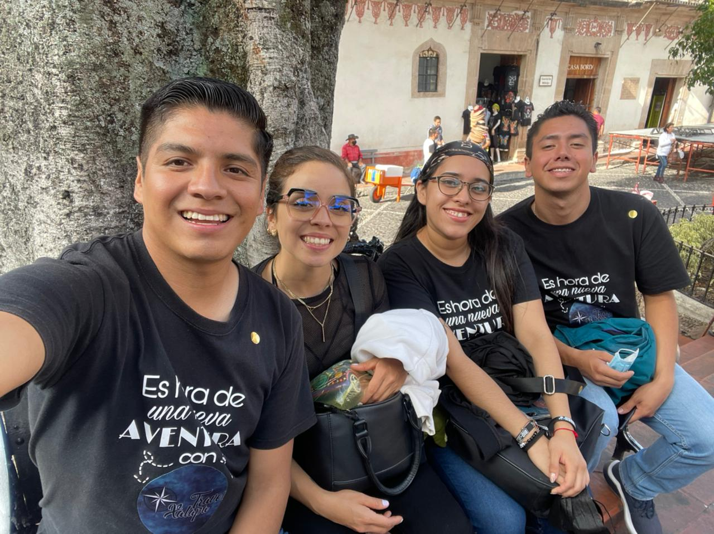
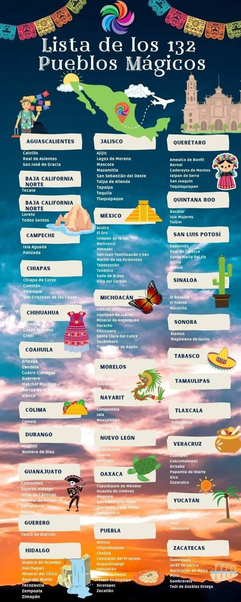

¿Quiénes somos?
Somos una microempresa originaria de la ciudad de Xalapa, en el estado de Veracruz en México.
Somos cuatro personas multidisciplinarias, de diferentes edades, que nos unimos para impulsar este pequeño negocio donde podamos ofrecer el servicio de pequeños viajes de un día, denominados tours, a diferentes destinos dentro de la República Mexicana.

Misión y Visión
Misión: Ofrecer nuestro servicio con calidad y confianza, dándole a nuestros clientes la comodidad y beneficios, que otras empresas que tienen el mismo servicio, no les ofrecen.
Visión: Ser una empresa de servicios turísticos reconocida no sólo a nivel local sino también estatal.
Lugares que hemos visitado
- San Miguel de Allende, Ciudad de México.
- Taxco, Guerrero.
- Catemaco, Catemaco.
- San Cristóbal de las Casa, Chiapas.
- Las grutas de Tolantongo, Hidalgo.
- Las grutas de Cacahuamilpa, Guerrero.
- Teotihuacán, Estado de México.
- Centro histórico de la Ciudad de México.
- El nevado de Toluca, Hidalgo.
- Valle de Bravo, Hidalgo.
- Peña de Bernal, Querétaro.
- Tepoztlan, Ciudad de México.
- Cuetzalan, Puebla.
- Tequisquiapan, Querétaro.
- Jonotla, Puebla.
- Huasca de Ocampo, Hidalgo.
- Prismas Basálticos, Hidalgo.
- Real del Monte, Hidalgo.
- Orizaba, Veracruz.
- Eyipantla, Veracruz.
- La Barra de Sontecomapan, Veracruz.
- Chiapa de Corzo, Chiapas.
- Guanajuato, Guanajuato.
- Las lagunas de Zempoala, Morelos.
- El rollo (Parque acuático), Morelos.
- Xochimilco, Ciudad de México.
- Zacatlán de las Manzanas, Puebla.
- Puebla, Puebla.
- Chignahuapan, Puebla.
- Atlixco, Puebla.
- Ex Hacienda de Chautla, Puebla.
Lugares que queremos visitar
Como equipo, tenemos el sueño de algún día, haber realizado tours a los 132 Pueblitos Mágicos del país, y esperamos que para ese entonces, no sean solamente de un día.
